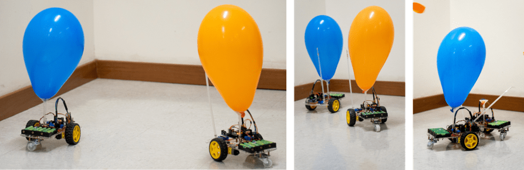
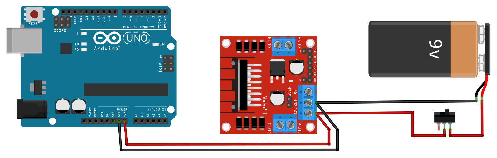
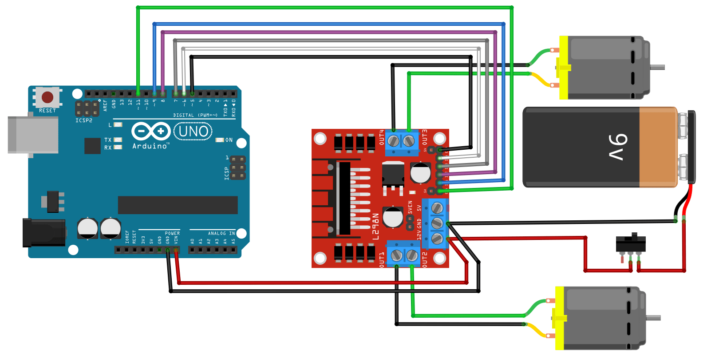
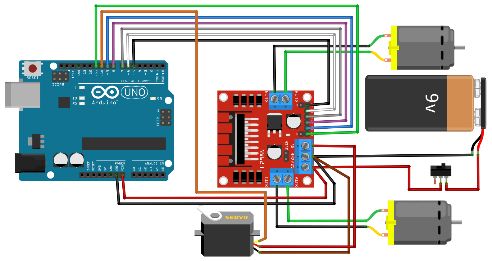
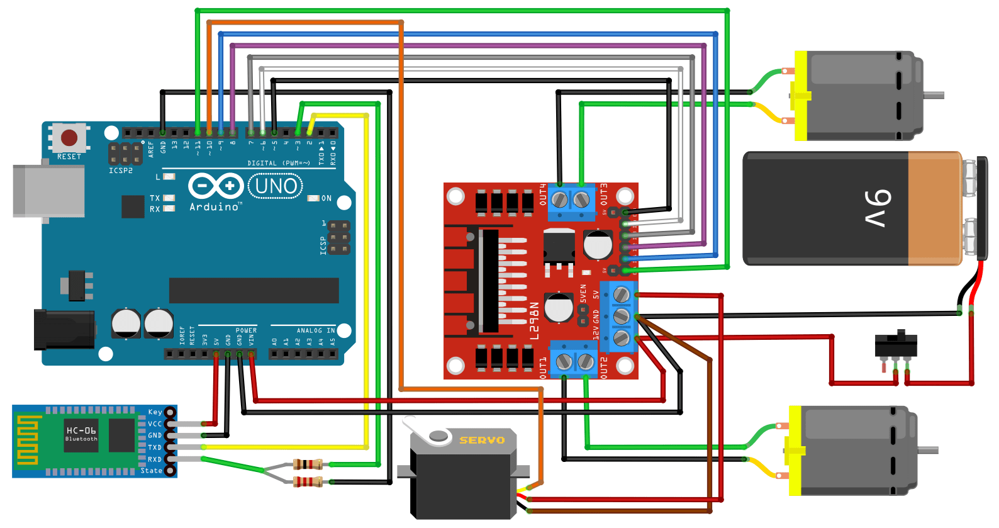
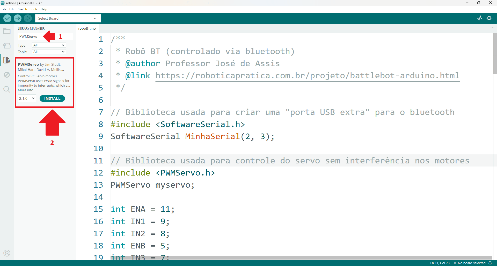
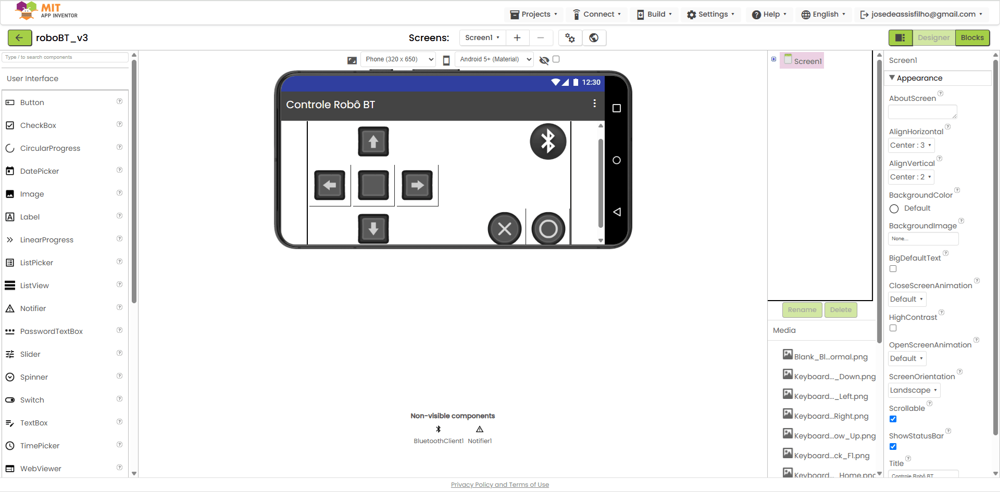
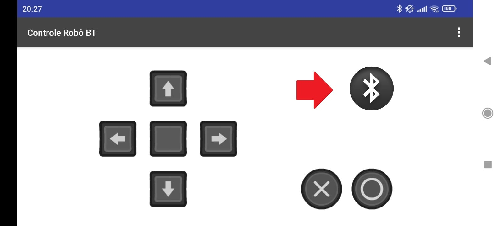
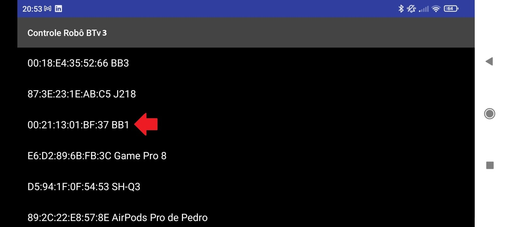
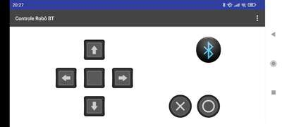

BattleBot Arduino - Monte o Robô de Combate Bluetooth (Estoura Balão)

Prepare-se para entrar na arena! Neste tutorial completo você vai aprender passo a passo como montar o BattleBot Arduino, um robô de combate Bluetooth estilo “estoura balão”. Com Arduino, ponte H L298N, micro servo e um módulo Bluetooth, você vai construir um robô de combate incrível que também pode ser adaptado para outros projetos de robótica educacional como exploradores, resgatistas e muito mais.
👉🏻 Tudo explicado de forma prática, divertida e detalhada: lista de materiais, planejamento, montagem elétrica, programação, conexão Bluetooth, código fonte e controle via aplicativo no celular.
No final, o seu robô estará pronto para a guerra dos balões. Que vença o melhor bot! ⚔️🎈
Passo 1 – Conheça o Projeto
Abrindo a arena! Neste vídeo você vai conhecer o robô de combate “estoura balão”, feito com Arduino e controlado por Bluetooth. Além de guerreiro, ele pode virar explorador, resgatista e até guarda de planta (sim, é versátil assim!).
Passo 2 - Lista de Materiais
Antes da batalha, precisamos do arsenal. No vídeo você confere todos os componentes necessários para montar seu robô de combate Arduino Bluetooth. Spoiler: não tem sabre de luz, mas quase!
Passo 3 - Planejamento da Montagem
Um bom guerreiro sempre planeja sua batalha! Neste passo você vai aprender a organizar e fixar o Arduino, a ponte H L298N, o módulo Bluetooth HC-06, o micro servo, a haste do balão e o suporte de pilhas no chassi robótico, garantindo que todos os componentes fiquem firmes e prontos para a montagem seguinte.
Passo 4 – Montagem Elétrica
Aqui você garante que o robô tenha energia para funcionar. O vídeo mostra como ligar o suporte de pilhas ao driver ponte H L298N e ao Arduino, distribuindo a alimentação de forma segura. Agora o robô já está “acordado”, mas ainda não se move.
Diagrama elétrico

Passo 5 - Ligando a Ponte H
Com a mecânica pronta e a energia ligada, chegou a hora de conectar a ponte H L298N ao Arduino e aos motores. Neste passo, você prepara tudo para que, no próximo passo, os comandos do código façam o robô se mover.
Diagrama de ligação dos motores

Passo 6 - Programação dos Movimentos
Chegou o momento de dar vida ao seu robô! Aqui você programa a ponte H no Arduino para controlar os motores e colocar o robô de combate em movimento pela primeira vez.
Passo 7 - A Arma Secreta
Todo combatente precisa de uma arma! Aqui você configura o micro servo no Arduino e monta a haste que vai estourar o balão inimigo.
Diagrama de ligação do micro servo

Passo 8 - Conexão Bluetooth
Chegou a hora de dar comandos ao robô. Você vai conectar o módulo Bluetooth HC-06 ao Arduino e preparar o Arduino para receber comandos do celular. É tipo domar um droide de combate!
Diagrama de ligação do módulo bluetooth

Configuração do módulo bluetooth
Por padrão, o módulo HC-06 vem de fábrica com as seguintes configurações:
- Nome (SSID Bluetooth): “HC-06”
- Senha (PIN): 1234
- Taxa de comunicação (baud rate): 9600 bps
Essas configurações permitem a conexão inicial entre o celular e o módulo sem nenhuma alteração. No entanto, se você tiver dois robôs na arena, é importante modificar o nome e a senha de cada módulo para evitar confusão, assim, cada robô será identificado de forma única na conexão Bluetooth.
A boa notícia é que esse processo é simples e você já tem um guia completo no site explicando passo a passo como alterar o nome (SSID) e a senha (PIN) do módulo HC-06 usando comandos AT.
Acesse o tutorial completo em:
Configuração do módulo bluetooth HC-06 ↗️
Passo 9 - Código Fonte
Aqui está o grimório secreto do projeto: bibliotecas e código fonte comentado, explicando cada detalhe de como o Arduino controla o robô de combate Bluetooth.
Lógica principal
O BattleBot Arduino funciona recebendo comandos simples do celular, enviados via Bluetooth. Cada letra corresponde a uma ação: o "w" faz o robô andar para frente, o "s" coloca em marcha à ré, o "a" e o "d" fazem o robô girar sobre o próprio eixo para a esquerda ou direita, o "p" serve para parar, e os comandos "b" e "x" movimentam o servo como um braço extra para atacar. Em resumo, o celular envia as ordens, o Bluetooth entrega a mensagem e o Arduino transforma isso em movimento.
Bibliotecas
Este projeto usa duas bibliotecas: "SoftwareSerial.h" e "PWMServo.h".
A biblioteca "SoftwareSerial.h" já vem junto com a IDE do Arduino e serve para criar uma porta serial extra em qualquer pino digital. O Arduino Uno tem apenas uma porta serial física (usada pelo cabo USB), e sem o SoftwareSerial não conseguiríamos usar o Bluetooth sem conflitos.
📌 Resumindo: ela abre uma nova “linha de comunicação” para o Arduino conversar com o módulo Bluetooth.
A biblioteca "PWMServo.h" precisa ser instalada manualmente. Ela serve para controlar servomotores de forma mais estável quando usamos PWM ao mesmo tempo para os motores do robô. No projeto, é ela que permite movimentar o braço ou mecanismo do BattleBot.
📌 Resumindo: ela dá ao robô o controle preciso de um braço ou garra sem atrapalhar os outros motores.
Para instalar esta biblioteca, pesquise pelo nome "PWMServo" (1) e clique no botão "INSTALL" (2)

Código fonte
🔎 Hora de investigar o código! Baixe, leia cada função e descubra como cada comando vira movimento. Afinal, entender a lógica é o verdadeiro poder Jedi do programador. Depois disso, é só enviar para o Arduino e preparar o aplicativo para mandar os comandos via Bluetooth. ✨
roboBT.ino ⬇️
Passo 10 - Aplicativo de Controle
O toque final: o app para controlar o robô foi criado com MIT App Inventor, pensado para ser simples e intuitivo. Estou disponibilizando o instalador (APK) para quem quiser instalar direto no celular, e também o projeto do App Inventor para quem quiser abrir, modificar ou recompilar.

Download do aplicativo (celulares Android)
roboBT_v3.apk ⬇️Instruções rápidas de instalação e uso do aplicativo:
- Baixe o arquivo roboBT_v3.apk (link acima).
- No Android, permita instalar apps de fontes desconhecidas (Configurações > Apps > Instalar apps desconhecidos, escolha o app navegador ou gestor de arquivos usado).
- Antes de conectar no app, emparelhe seu celular com o módulo Bluetooth do robô (por exemplo HC-06 ou outro nome atribuído ao módulo) via Configurações > Bluetooth do sistema.
- Abra o app instalado e clique no ícone do bluetooth.

- Selecione o módulo bluetooth pareado do robô (pressione uma vez e aguarde).

- A cor do ícone bluetooth do APP deve mudar para azul e o Led do módulo bluetooth deve parar de piscar (repita o processo caso o Led continue piscando).

- Use os botões do app para controlar: frente, ré, gira esquerda/direita, parar, e os botões de ataque que acionam os servos. O app envia as letras correspondentes via Bluetooth, conforme a Lógica principal.
Se quiser explorar ou modificar o projeto:
Acesse o repositório deste projeto no GitHub, baixe o arquivo .aia e importe em MIT App Inventor (appinventor.mit.edu). Lá você verá as telas, componentes Bluetooth e os blocos que enviam as letras ("w", "s", "a", "d", "p", "b", "x"). Faça suas alterações, teste no Emulador ou compile um novo APK.
Acessar repositório ↗️
MIT App Inventor
Caso queira aprender do zero a usar o MIT App Inventor para desenvolver projetos com módulo bluetooth, recomendo a seguinte playlist:
▶️ Automação residencial simples com Arduino
Que a Força da robótica esteja com você, e que vença o melhor bot! 🛠️🤖